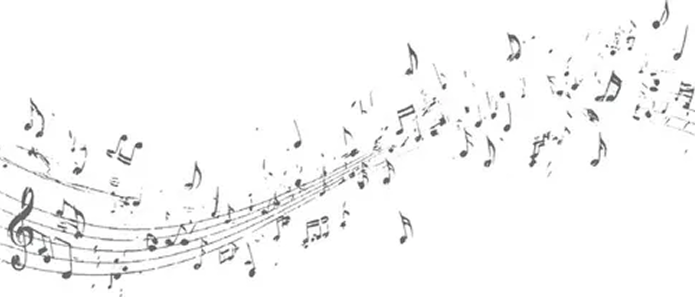
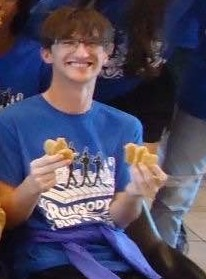
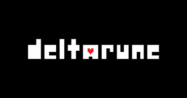
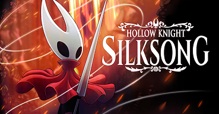
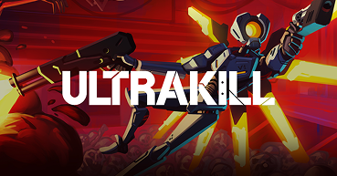
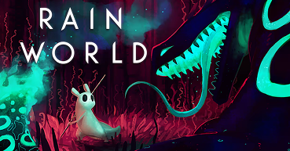
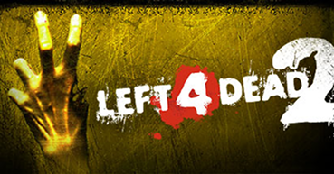

 |
Bio |
|---|---|
Hello! I am Matthew Marcella, a Games and Interactive Media major. This is my first year at MSU, and I am quite excited to learn more about game development.One thing in particular that interests me is music in games. Typically, music only exists in games to amplify the mood the designers want the player to feel, but why stop there? |
|
What are they? |
How are they used? |
How are they found? |
|---|---|---|
First off, a motif is a reoccurring theme, feature, or idea throughout a story. Although not everyone notices them, those with a keen eye might get a deeper understanding of the themes in a story thanks to motifs. |
The most common way they are used is to signal good and evil. The iconic "Imperial March" from Star Wars has loud, sinister sounding brass that conveys an evil sound to the listener, while the "Star Wars (Main Theme)” has much brighter sounding brass, and heroic melodies. |
Leitmotifs can be found if one or more songs in a soundtrack have similar/exact...
|
More specifically, leitmotifs are short, reoccurring musical phrases associated with a person, place, thing, or idea. Leitmotifs can be very easy to notice, or sometimes quite hidden. In media, they can be used to represent opposing teams, different characters and places, or reoccurring situations. |
In gaming, they can be used quite differently. For example, the infamous Freedom Motif from Deltarune. There are four secret bosses in Deltarune; each boss being associated with freedom. All but one of these secret bosses have the Freedom Motif in their boss themes. Additionally, two of these secret bosses have the Freedom Motif present in a song before their boss fight. |
Sometimes, if a supposed leitmotif doesn't seem intentional, is difficult to actually hear, or the two themes have zero obvious correlation, it might not be one at all. |
This gives that character some foreshadowing before they are revealed to be a secret boss. Creating leitmotifs like this allows certain characters and ideas to become linked, while not being physically connected. |
 |
Although dozens of great games have leitmotifs, I can only list off so many. Here are some of my favorites! |
 |
Freedom Motif (composed by Toby Fox) |
(Click on the image to hear the leitmotif!) |
Dies Irae Motif (composed by Christopher Larkin) |
 |
 |
 |
Requiem Motif (composed by Heaven Pierce Her) |
Theme Motif (composed by James Primate) |
Witch Motif (composed by Mike Morasky) |